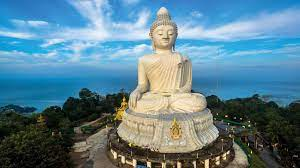
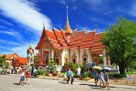
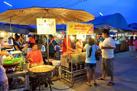
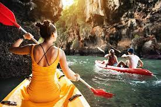
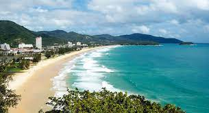

여행지 소개
태국 푸껫

푸켓의 관광명소 소개
푸켓 최고의 명소를 관광하며 여행을 시작하세요. 푸켓 빅 부다, 왓찰롱, Patong Boxing Stadium,나카 시장, John Gray's Sea Canoe, Freedom Beach, Karon Viewpoint를 둘러보고 인근 지역의 숨은 명소를 구경하면서 남은 시간을 보내세요! 뉴욕은 세계적으로 유명한 도시로, 다양한 문화, 역사, 예술적인 경험을 제공하는 여러 관광 명소가 있습니다. 여기에는 몇 가지 인기 있는 명소가 포함되어 있습니다!
- Phuket Big Buddha (푸켓 빅 부다): 푸켓 섬의 남쪽에 위치한 이 큰 부처상은 푸켓의 상징 중 하나로 꼽힙니다. 높이 약 45m에 이르는 이 부처상은 백상과 태국의 문화를 경험하고 아름다운 전망을 즐길 수 있는 장소로 유명합니다.

- Wat Chalong (왓찰롱): 왓찰롱은 푸켓에서 가장 중요한 부처교 사원 중 하나로 알려져 있습니다. 사원은 다양한 부처상과 아름다운 실내 장식물로 유명하며, 신앙을 가지고 있는 이들이 찾는 승려들의 성지입니다.

- Patong Boxing Stadium (파통 복싱 스타디움): 파통은 푸켓에서 가장 활기찬 관광지 중 하나이며, 복싱 스타디움에서는 태국 전통 복싱 경기를 관람할 수 있습니다. 현지 선수들의 격렬한 경기를 감상하면서 현지 복싱 문화를 체험할 수 있는 장소입니다.

- Naka Market (나카 시장):나카 시장은 푸켓에서 대표적인 시장 중 하나로, 다양한 상점에서 의류, 액세서리, 골동품, 공예품 등을 구매할 수 있습니다. 현지 음식이나 태국의 전통적인 상품들을 구경하며 태국의 다양한 매력을 느낄 수 있는 장소입니다.

- John Gray's Sea Canoe (존 그레이의 씨 카누):존 그레이의 씨 카누는 푸켓 주변의 섬과 동굴을 탐험하는 생태 관광 투어를 제공하는 회사입니다. 바다 카누를 타고 푸켓 주변의 아름다운 자연환경을 탐험하며 바다 동굴, 해변, 수중 동굴 등을 체험할 수 있습니다.

- Freedom Beach (프리덤 비치):이 해변은 그림 같은 백사장과 맑은 푸켓의 해수욕을 즐길 수 있는 곳으로 유명합니다. 자연스러운 환경과 조용한 분위기가 특징이며, 휴양과 쉼터를 찾는 이들에게 인기가 있습니다.
